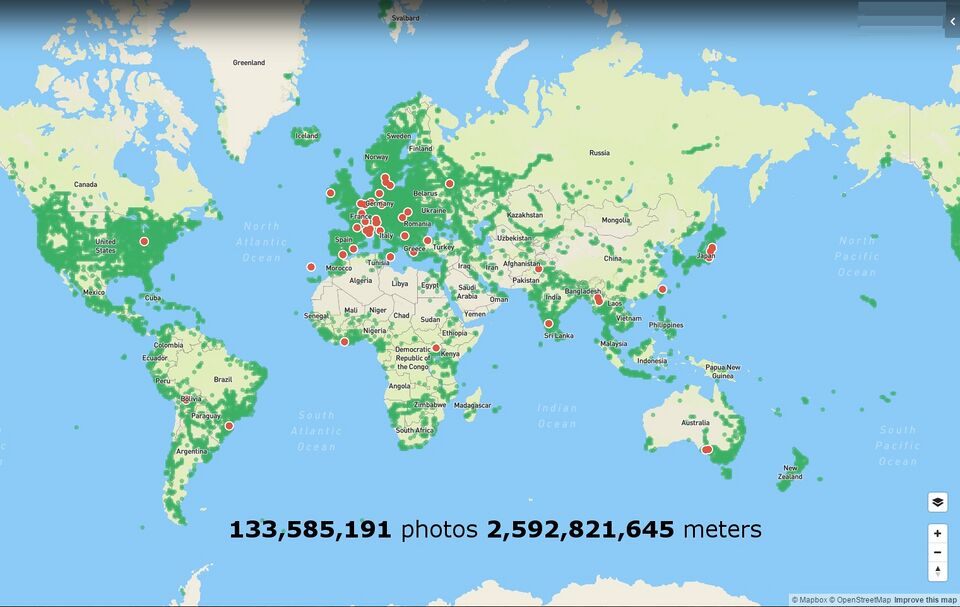

Impact & Vision
Who Urban Access is built for, what it changes, and where it goes next.
Who This Is For
Accessible routing isn't a niche problem. It affects hundreds of thousands of mobility-impaired Montrealers today, and millions of Canadians who currently have no tool that accounts for their real experience of urban navigation.
Immediate Beneficiaries
The 200,000+ Montrealers with mobility impairments who currently lack an accessible routing tool that accounts for ground-level sidewalk conditions. These are people who must rely on memory, word-of-mouth, or trial and error to plan any journey outside their familiar neighbourhood.
Urban Access gives these users a tool that reflects their actual experience — not the idealised pedestrian experience that standard maps assume.
Secondary Impact: Policy Evidence
The accessibility scores generated by Urban Access for thousands of Montreal locations are a potential data source for city planners identifying infrastructure gaps. A map of consistently low-scoring sidewalk segments is a powerful, evidence-based case for targeted infrastructure investment.
Heat intensity = inaccessibility. Dark blue areas have the most barriers and are where the strongest case can be made for infrastructure investment.
What Makes This Novel
Urban Access is unique not just as an application, but as a set of methodological contributions to AI-assisted accessibility assessment.
Novel Dataset
No publicly available dataset combines Mapillary street-level imagery with per-mobility-aid accessibility labels at 31,887 scale for Canadian cities. This dataset is itself a research contribution.
VLM-Calibrated Labelling
The recalibration methodology, z-score normalising AI-generated scores to match human survey distributions before binarization, is a principled, novel contribution to AI-generated label quality control. It actively reduces systematic bias from using a VLM as a labelling source.
MAE Domain Adaptation
Self-supervised pre-training on domain-specific street-view images before supervised fine-tuning is state-of-the-art for sample-efficient visual classification. Adapting this to accessibility-specific visual features is a novel application.
Multi-Signal LLM Routing
Combining ViT scores, VLM annotations, pedestrian safety data, construction data, gradient data, and user feedback into a single LLM-generated route recommendation is a novel integration approach as no comparable system exists for this use case.
Proximity-Weighted Personalisation
Weighting user feedback by origin/destination similarity for prompt construction enables practical, low-latency personalisation without model retraining — a novel mechanism for incorporating real-world user experience at inference time.
Aid-Specific Classification
Six parallel binary classifiers from a single image forward pass — one per mobility aid type — means a single model can serve the full diversity of mobility impairment rather than treating all users identically.
Ethics By Design
Community-led design, label bias mitigation, data privacy, and honest documentation of limitations are all covered in full on the Ethics page.
Built to Scale
The pipeline is city-agnostic. Every component can be replicated for any city with Mapillary coverage which is most major urban centres globally.
Scaling from Montreal to other Canadian cities requires:
- Running the image collection pipeline for the new city's coordinates
- Running Gemini labelling on the new images (API-based, not infrastructure-dependent)
- Fine-tuning the ViT on the new dataset (or transfer-learning from the Montreal model)
- Integrating city-specific auxiliary data (construction zones, pedestrian safety)
The core methodology (MAE pre-training, VLM-calibrated labelling, multi-signal LLM routing) is the same regardless of city.

Scaling to the full Canadian scope would realistically require: (1) funding to access Google Street View for broader and higher-resolution image coverage in lower-density areas where Mapillary is sparse; (2) stable hosting beyond Google Cloud's 3-month free tier; and (3) access to city-specific auxiliary data such as snow removal schedules (Montreal's snow removal API was under maintenance during our development period). These are resource constraints, not technical blockers. The methodology itself transfers.
Honest Assessment of Limitations
No system at this stage of development is without constraints. We document them clearly so that future work can address them systematically.
| Limitation | Details | Path Forward |
|---|---|---|
| MAE training incomplete | Pre-training ran 95 of 200 planned epochs. The loss trajectory suggests continued improvement was available. | Secure compute resources to run remaining epochs; expect improved ViT performance. |
| VLM label quality | VLM validation study (n=18) was underpowered. Non-significant correlations do not confirm zero validity, but larger-scale validation is needed. | Expand human labelling study to n=55+ per aid type for 80% statistical power. |
| Mapillary coverage gaps | Excellent in downtown Montreal; sparse in suburban and lower-density areas. | Access Google Street View API for production-scale deployment. |
| Seasonal data gap | Images collected primarily in summer/fall. Winter conditions (snow, ice) dramatically change accessibility and are underrepresented in training data. | Collect winter imagery; integrate snow removal schedule API when available. |
| Hosting stability | Google Cloud free tier expires after 3 months. | Grant funding, university partnership, or non-profit cloud credits. |
| Walker class performance | Walker F1 (~70%) is the lowest across classes, partly due to 69.7% inaccessible imbalance and no label recalibration for this class. | Targeted data collection and per-class threshold tuning. |
Development Roadmap
A clear, prioritised path from current deployed state to city-scale accessible routing infrastructure.
Phase 1 — Stability
Secure Hosting & Complete Pre-Training
Secure stable hosting beyond the 3-month Google Cloud trial through grant funding or institutional partnership — without it, the application cannot build the user base required for meaningful feedback accumulation. Run remaining MAE epochs (95 → 200) to improve encoder quality; the loss trajectory suggests continued improvement is available. Deploy a stable production server.
Phase 2 — Data Quality
Expand Coverage & Winter Data
Integrate Google Street View for broader image coverage in suburban areas where Mapillary is sparse, which currently limits routing reliability outside Montreal's downtown core. Collect winter imagery for Montreal to address the seasonal data gap, and acquire the snow removal schedule API for real-time winter routing as this is when accessible routing is most critically needed in the city. Expand our survey to increase ground-truth validation sample size.
Phase 3 — Intelligence
Reinforcement Learning & Transit Integration
Implement Reinforcement Learning feedback loop to replace prompt-weighting with a proper learning mechanism that allows the routing system to improve from user satisfaction signals at scale. Explore extension to visual impairment and hearing impairment categories, which were scored during VLM labelling but not used in this project.
Phase 4 — Scale
Canada-Wide Deployment
Replicate the pipeline for additional Canadian cities. Establish data-sharing partnerships with municipalities to access construction and infrastructure data. Reach the 4 million+ Canadians with mobility impairments who lack a routing tool that reflects their real experience.
What We Built
In a single AI4Good Lab cohort, Urban Access delivered a complete, end-to-end accessible routing system, from community engagement to deployed application.
31,887-Row Dataset
Street-level images across 14,000 Montreal locations, annotated for six mobility aid types using a novel VLM-calibrated labelling pipeline.
Trained ViT Model
MAE pre-trained and fine-tuned through six passes. Best mean F1: 72.6%. Six parallel binary classifiers with one per mobility aid type.
Community Grounding
30+ disability groups reached. Two key advisors (Rashid Mushkani, Laurence Parent) shaped the system throughout. Human survey data calibrated our AI labels.
Deployed Application
Full-stack app integrating ViT scoring, VLM annotation, multi-signal LLM routing, and a privacy-first user feedback system.